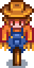

Scarecrow
| Scarecrow | |
 |
|
| Prevents crows from attacking your crops. Has a limited radius (about 8 "tiles"). | |
| Information | |
| Source | Crafting |
| Season | Spring • Summer • Fall |
| Sell Price | Cannot be sold |
| Crafting | |
| Recipe Source | |
| Ingredients | |
A Scarecrow is a craftable item that prevents crows from eating crops. Scarecrows can be crafted at Farming level 1. Scarecrows are not needed to protect crops grown from Wild Seeds, since crows do not attack them.
Since there are no crows on Ginger Island, no scarecrows need to be planted on the farm there.
Range
A Scarecrow will protect the surrounding circular area of 249 spaces (including the space its standing on); 8 spaces each to the north, east, south, and west, as well as 6 spaces each to the northeast, southeast, southwest, and northwest. In other words, it protects a 17x17 area, excluding 10 spaces in each corner.
Rarecrows
Rarecrows work the same way as regular Scarecrows, except for the Alien Scarecrow, which hats can be placed on. Soon after collecting all 8 rarecrows (usually the next day) a letter will arrive with the recipe to craft a Deluxe Scarecrow.
| Number | Image | How to Obtain |
|---|---|---|
| 1 | Purchase at the Stardew Valley Fair for | |
| 2 | Purchase at the Spirit's Eve festival for | |
| 3 | Purchase at the Casino for | |
| 4 | Purchase at the Traveling Cart randomly during fall or winter for or purchase at the Festival of Ice for | |
| 5 | Purchase at the Flower Dance for | |
| 6 | Purchase from the Dwarf for | |
| 7 | Donate 20 Artifacts (not counting Minerals) to the Museum. Can be purchased from the Night Market once the first one is earned. | |
| 8 | Donate 40 items to the Museum. Can be purchased from the Night Market once the first one is earned. |
Quests
- Reach Farming Level 1 and craft a Scarecrow to complete the "Advancement" Quest.
Trivia
- Rarecrow #1 is a reference to the Turnip Head character in Hayao Miyazaki's Howl's Moving Castle.
- Interacting with a Scarecrow shows a message indicating how many crows it has scared away. The counter resets when the Scarecrow is picked up.
Secrets
History
- 1.4.1: Can now purchase museum rarecrows from the Night Market.